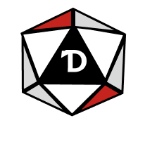
Projektissa toteutimme pöytäroolipeleihin apusovelluksen, jota pelaajat voivat käyttää pelin aikana eri tilanteiden generointiin.
Toimin projektissa front-end -kehittäjänä. Vastasin käyttöliittymän toteutuksesta HTML- ja CSS-teknologioilla Figma-mallien pohjalta.
Hyödynsin Angular Material -komponentteja ja toteutin responsiivisuuden media queryillä.
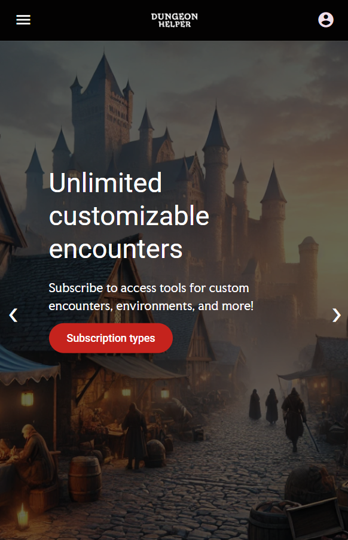
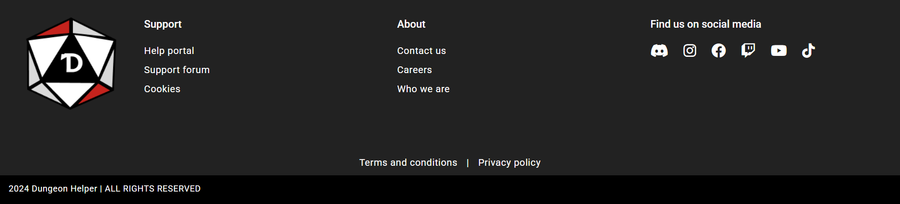
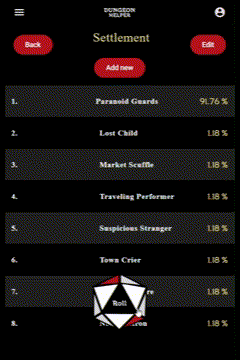
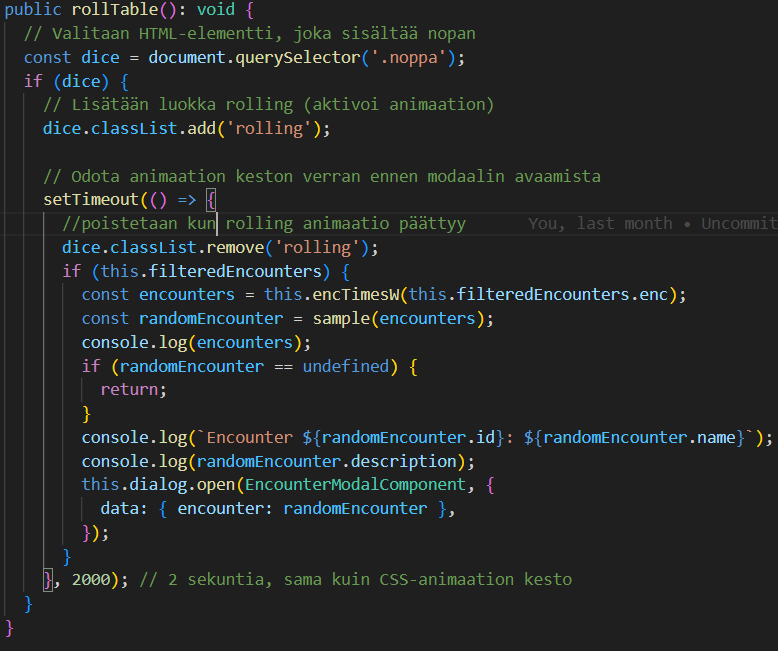
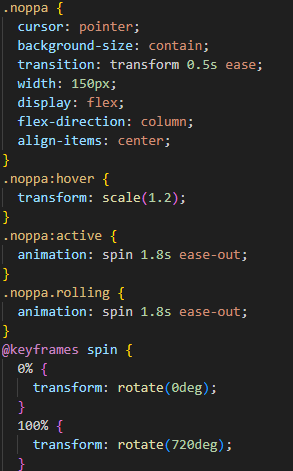
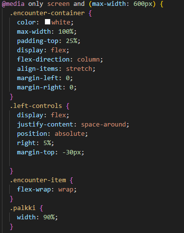
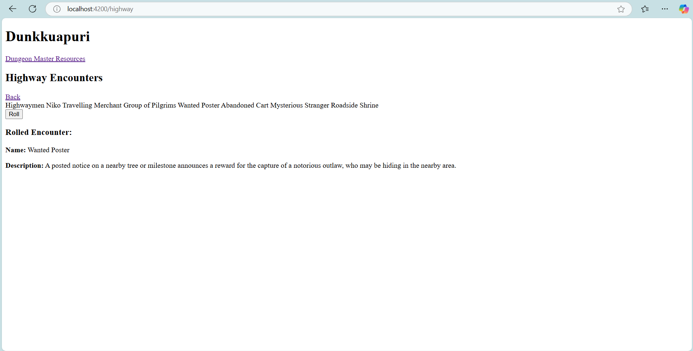
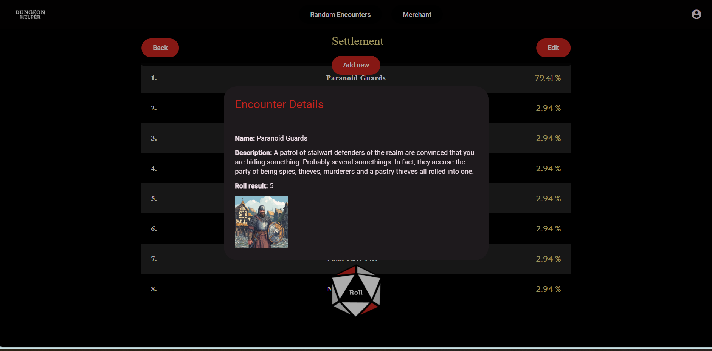
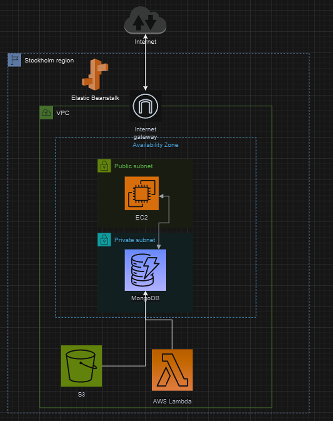
Suunnittelin ensin infrastruktuurin arkkitehtuurikaavion ja valitsin alustaksi Elastic Beanstalkin.
EB CLI:n kautta ympäristön luonti ei onnistunut AWS:n päivityksen vuoksi (Launch configuration error), joten toteutin ympäristön AWS konsolin kautta.
Frontendin environments-konfiguraatio, buildattu dist-kansio backendille, reititykset ja CORS-policyt määritettiin ennen Elastic Beanstalk -deployta.
HTTPS-yhteys toteutettiin self-signed SSL-sertifikaatilla.
Suurimmat ongelmat liittyivät frontendin ja backendin välisiin reitityksiin, jotka saatiin lopulta toimimaan konfiguraatiomuutoksilla.
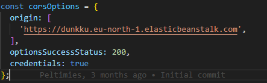
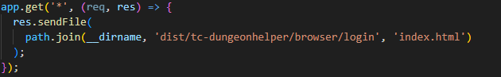
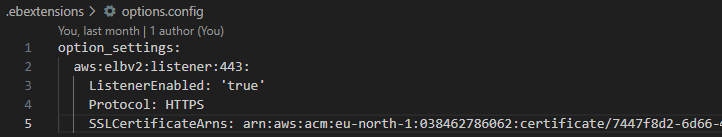
Testaus toteutettiin blackbox-tyyppisesti Cypressillä. Testasimme järjestelmällisesti, että toiminnot ja käyttöliittymän elementit toimivat odotetusti.
Testaus tuli itselleni uutena vastuualueena projektin loppuvaiheessa, mutta kaikki keskeiset toiminnallisuudet saatiin validoitua toimiviksi.
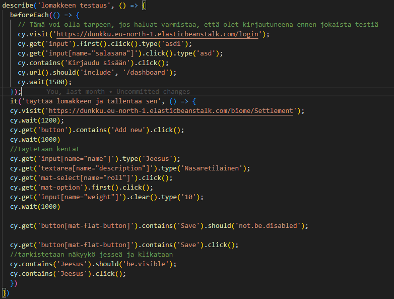
Tulevaisuudessa haluan syventää pilviosaamistani. Projekti kehitti ymmärrystäni scrum-prosessista sekä fullstack-sovelluksen kokonaisuudesta ja sen viemisestä pilviympäristöön.
Tavoitteenani on suorittaa AWS-sertifikaatteja (Cloud Practitioner ja Solutions Architect) kehittääkseni osaamistani entisestään.
Vahvuuksiani ovat tiimityöskentely, pilviympäristöjen ymmärrys sekä käyttöliittymän toteutus ja viimeistely.